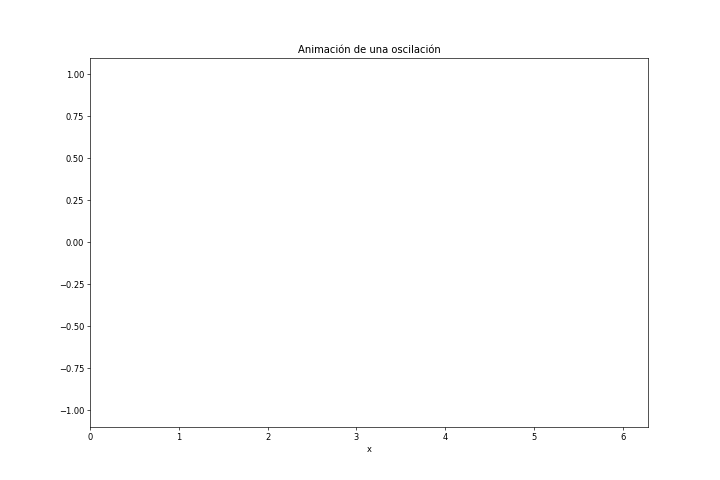

Clase 14: Animaciones e interactividad
Animaciones con Matploblib
Matplotlib tiene funciones para hacer animaciones de una manera conveniente. Hay excelente información sobre el tema en:
Vamos a ver brevemente cómo hacer animaciones, en pocos Pasos
Una animación simple en pocos pasos
cd scripts/animaciones
/home/fiol/Clases/IntPython/clases-python/clases/scripts/animaciones
%matplotlib tk
%run ejemplo_animation_1.py
import numpy as np
import matplotlib.pyplot as plt
import matplotlib.animation as animation
plt.ioff()
# Creamos los datos
xmax = 2*np.pi
Npts= 50
x = np.linspace(0, xmax, Npts)
data = np.vstack([x, np.sin(x)])
def update_line(num, data, line):
line.set_data(data[:, :num])
return line,
# Creamos la figura e inicializamos
# Graficamos una línea sin ningún punto
# Fijamos las condiciones de graficación
fig1, ax = plt.subplots(figsize=(12,8))
L, = plt.plot([], [], '-o') # equivalente a la siguiente
# L = plt.plot([],[] , '-o')[0]
ax.set_xlim(0, xmax)
ax.set_ylim(-1.1, 1.1)
ax.set_xlabel('x')
ax.set_title('Animación de una oscilación')
#
line_ani = animation.FuncAnimation(fig1, update_line, Npts, fargs=(data, L), interval=100, blit=True)
plt.show()
Este código da como resultado una función oscilante que se va creando. Este es un ejemplo simple que puede ser útil para graficar datos de una medición o de un cálculo más o menos largo.
Preparación general
Como vemos, después de importar el submódulo animation (además de lo
usual):
import numpy as np
import matplotlib.pyplot as plt
import matplotlib.animation as animation
plt.ioff()
nos aseguramos que estamos trabajando en modo no interactivo (con
plt.ioff()).
Creamos los datos para graficar
Creación de datos para graficar
Creamos los datos para mostrar en la animación.
xmax = 2*np.pi
Npts = 50
x = np.linspace(0, xmax, Npts)
data = np.vstack([x, np.sin(x)])
Acá data es un array 2D, con los datos \(x\), \(y\).
Preparación de la figura
A continuación preparamos la zona de graficación:
Creamos la figura y eje
Creamos las líneas de graficación (una en este caso)
Fijamos los límites de graficación
Agregamos el texto, que va a ser invariante durante la animación
fig1, ax = plt.subplots(figsize=(12,8))
L, = plt.plot([0], [0], '-o', lw=3)
ax.set_xlim(0, xmax)
ax.set_ylim(-1.1, 1.1)
ax.set_xlabel('x')
ax.set_title('Animación de una oscilación')
Como sabemos, el llamado a plot() devuelve una lista de líneas (de
un solo elemento). A este elemento lo llamamos L, y ya le damos las
características que queremos que tenga. En este caso, fijamos el símbolo
(círculos), con líneas de ancho 3. Vamos a modificar esta línea L en
cada cuadro de la animación.
Función para actualizar la línea
Debemos crear una función que modifique las curvas en cada cuadro.
def update_line(num, data, line):
line.set_data(data[:, :num])
return line,
Esta función debe recibir como argumento el número de cuadro, que acá
llamamos num. Además, en este caso recibe los datos a graficar, y la
línea a modificar.
Esta función devuelve una línea L, que es la parte del gráfico que
queremos que se actualice en cada frame.
Notemos acá que no es necesario que tome como argumento los datos
guardados en data y la línea line, ya que son variables globales
a las que hay acceso dentro del script. De la misma manera no es
necesario que devuelva la línea, por la misma razón.
Animación de la figura
Finalmente llamamos a la función que hace la animación:
animation.FuncAnimation()
import matplotlib.animation as animation
np.info(animation.FuncAnimation)
FuncAnimation(fig, func, frames=None, init_func=None, fargs=None,
save_count=None, , cache_frame_data=True, **kwargs)
Makes an animation by repeatedly calling a function *func.
.. note::
You must store the created Animation in a variable that lives as long
as the animation should run. Otherwise, the Animation object will be
garbage-collected and the animation stops.
Parameters
----------
fig : ~matplotlib.figure.Figure
The figure object used to get needed events, such as draw or resize.
func : callable
The function to call at each frame. The first argument will
be the next value in frames. Any additional positional
arguments can be supplied via the fargs parameter.
The required signature is::
def func(frame, fargs) -> iterable_of_artists
If ``blit == True``, *func must return an iterable of all artists
that were modified or created. This information is used by the blitting
algorithm to determine which parts of the figure have to be updated.
The return value is unused if blit == False and may be omitted in
that case.
frames : iterable, int, generator function, or None, optional
Source of data to pass func and each frame of the animation
- If an iterable, then simply use the values provided. If the
iterable has a length, it will override the save_count kwarg.
- If an integer, then equivalent to passing range(frames)
- If a generator function, then must have the signature::
def gen_function() -> obj
- If None, then equivalent to passing itertools.count.
In all of these cases, the values in frames is simply passed through
to the user-supplied func and thus can be of any type.
init_func : callable, optional
A function used to draw a clear frame. If not given, the results of
drawing from the first item in the frames sequence will be used. This
function will be called once before the first frame.
The required signature is::
def init_func() -> iterable_of_artists
If blit == True, init_func must return an iterable of artists
to be re-drawn. This information is used by the blitting algorithm to
determine which parts of the figure have to be updated. The return
value is unused if blit == False and may be omitted in that case.
fargs : tuple or None, optional
Additional arguments to pass to each call to func.
save_count : int, default: 100
Fallback for the number of values from frames to cache. This is
only used if the number of frames cannot be inferred from frames,
i.e. when it's an iterator without length or a generator.
interval : int, default: 200
Delay between frames in milliseconds.
repeat_delay : int, default: 0
The delay in milliseconds between consecutive animation runs, if
repeat is True.
repeat : bool, default: True
Whether the animation repeats when the sequence of frames is completed.
blit : bool, default: False
Whether blitting is used to optimize drawing. Note: when using
blitting, any animated artists will be drawn according to their zorder;
however, they will be drawn on top of any previous artists, regardless
of their zorder.
cache_frame_data : bool, default: True
Whether frame data is cached. Disabling cache might be helpful when
frames contain large objects.
Methods:
new_frame_seq -- Return a new sequence of frame information.
new_saved_frame_seq -- Return a new sequence of saved/cached frame information.
pause -- Pause the animation.
resume -- Resume the animation.
save -- Save the animation as a movie file by drawing every frame.
to_html5_video -- Convert the animation to an HTML5 <video> tag.
to_jshtml -- Generate HTML representation of the animation.
line_anim = animation.FuncAnimation(fig1, update_line, Npts,
fargs=(data, L), interval=100, blit=True)
La función FuncAnimation() toma como argumentos:
la figura (
fig1) donde se realiza el gráfico.Una función a la que llama antes de dibujar cada frame (
update_line),El argumento
intervalda el tiempo entre cuadros, en milisegundos.El argumento
fargses una tuple con los argumentos que necesita la funciónupdate_line(). En este caso(data, L).El argumento
blit=Truehace que sólo se actualicen las partes que cambian en la animación, mientras que las partes estáticas no se dibujan en cada cuadro.
Es importante que el objeto creado por FuncAnimation() no se
destruya. Esto lo podemos asegurar asignando el objeto resultante a una
variable, en este caso line_anim.
Opcional: grabar la animación a un archivo
Podemos grabar la animación a un archivo usando el método save() o
el método to_html5_video() del objeto (anim) que devuelve la
función FuncAnimation().
Para poder grabar a archivo las animaciones se necesita tener instalados programas externos (alguno de ffmpeg, avconv, imagemagick). Ver https://matplotlib.org/api/animation_api.html para más información.
Segundo ejemplo simple: Quiver
Para hacer una animación de un campo de fuerzas o velocidades
necesitamos datos en tres dimensiones. El siguiente ejemplo sigue los
pasos de la animación anterior, excepto en la creación de datos y la
graficación, que en lugar de usar plot() usa quiver():
import numpy as np
import matplotlib.pyplot as plt
import matplotlib.animation as animation
plt.style.use('ggplot')
plt.ioff()
# ############################################################
# Creación de datos
x = np.linspace(-3, 3, 91)
t = np.linspace(0, 25, 30)
y = np.linspace(-3, 3, 91)
X3, Y3, T3 = np.meshgrid(x, y, t)
sinT3 = np.sin(2*np.pi*T3 /
T3.max(axis=2)[..., np.newaxis])
G = (X3**2 + Y3**2)*sinT3
# Graficar una flecha cada step puntos
step = 10
x_q, y_q = x[::step], y[::step]
# Create U and V vectors to plot
U = G[::step, ::step, :-1].copy()
V = np.roll(U, shift=3, axis=2)
# ############################################################
# Figura y ejes.
fig1, ax = plt.subplots(figsize=(12,8))
ax.set_aspect('equal')
ax.set(xlim=(-4, 4), ylim=(-4, 4))
qax = ax.quiver(x_q, y_q, U[..., 0], V[..., 0],
scale=100)
def animate(i):
qax.set_UVC(U[..., i], V[..., i])
anim = animation.FuncAnimation(fig1, animate, interval=100, frames=len(t)-1, repeat=True)
# anim.save('quiver.gif', writer='imagemagick')
anim.save('quiver.mp4')
plt.show()
%run ejemplo_quiver.py
Comentarios:
Se utilizó la función
quiver()para generar un campo vectorial. La forma de esta función es:quiver([X, Y], U, V, [C], **kw)
X, Y define the arrow locations, U, V define the arrow directions, and C optionally sets the color.
Se utilizaron Ellipsis, por ejemplo en casos como:
U[..., 0]
Las elipsis (tres puntos o la palabra
Ellipsis) indican todo el rango para todas las dimensiones que no se dan explícitamente. En este ejemplo el arrayUtiene tres dimensiones, por lo que tendremos:U[..., 0] = U[:, :, 0]
En general, las elipses reemplazan a los dos puntos en todas las dimensiones no dadas explícitamente
a = np.arange(36)
a2 = a.reshape((6,-1))
a4 = a.reshape((2,3,2,3))
print(a2[:,0])
print(a2[..., 0])
[ 0 6 12 18 24 30]
[ 0 6 12 18 24 30]
print(a4[0,:,:,0])
print(a4[0,...,0])
[[ 0 3]
[ 6 9]
[12 15]]
[[ 0 3]
[ 6 9]
[12 15]]
(a4[...,0] == a4[:,:,:,0]).all()
True
Uso de
np.roll(a, shift, axis=None)que mueve elementos una distanciashifta lo largo del ejeaxis, y cuando pasan la última posición los reintroduce al principio. Por ejemplo, en una dimensión:
x = np.arange(10)
print(x)
print(np.roll(x, 2))
[0 1 2 3 4 5 6 7 8 9]
[8 9 0 1 2 3 4 5 6 7]
Tercer ejemplo
Veamos un ejemplo similar al primero, pero donde vamos cambiando los límites de los ejes en forma manual, a medida que los datos lo requieren
import numpy as np
import matplotlib.pyplot as plt
import matplotlib.animation as animation
# Calcula los datos en tiempo real.
def data_gen(t=0):
cnt = 0
while cnt < 1000:
cnt += 1
t += 0.1
yield t, np.sin(2 * np.pi * t) * np.exp(-t / 10.)
# Necesitamos que se puede acceder a estas variables
# desde varias funciones -> globales
fig, ax = plt.subplots()
line, = ax.plot([], [], lw=2)
xdata, ydata = [], []
def init():
ax.grid()
ax.set_ylim(-1.1, 1.1)
ax.set_xlim(0, 10)
del xdata[:]
del ydata[:]
line.set_data(xdata, ydata)
return line,
def run(data):
# update the data
t, y = data
xdata.append(t)
ydata.append(y)
xmin, xmax = ax.get_xlim()
# Si los datos salen del eje, agrandamos el eje
# Después tenemos que redibujar el canvas manualmente
if t >= xmax:
ax.set_xlim(xmin, 2 * xmax)
ax.figure.canvas.draw()
line.set_data(xdata, ydata)
return line,
ani = animation.FuncAnimation(fig, run, data_gen, blit=False,
interval=30,repeat=False, init_func=init)
plt.show()
%run animate_decay.py
plt.style.reload_library()
plt.style.use('default')
Ejercicios 14 (a)
Utilizando Matplotlib:
Hacer un gráfico donde dibuje una parábola \(y = x^{2}\) en el rango \([-5,5]\).
En el mismo gráfico, agregar un círculo en \(x=-5\).
El círculo debe moverse siguiendo la curva, como se muestra en la figura
PARA ENTREGAR. Caída libre 2: Modificar el ejercicio de la clase 8 de caída libre que entregó, para aceptar dos nuevas opciones:
La opción
--vxpermite dar una velocidad inicial en la dirección horizontal.La opción
--animate, tal que cuando se utilice, el programa muestre una animación de la trayectoria.La animación tiene que tener un cartel indicando el tiempo, y la velocidad y altura correspondiente a ese tiempo.
Agregue una “cola fantasma” a la partícula, que muestre posiciones anteriores.
Envíe el programa llamado 14_Suapellido.py en un adjunto por correo electrónico, con asunto: 14_Suapellido
.
Trabajo simple con imágenes
Vamos a empezar leyendo y mostrando algunas imágenes, para entender cómo
es su representación. Para leer y escribir imágenes vamos a usar el
paquete adicional imageio. Scipy tiene funciones (con el mismo
nombre) para realizar este trabajo en el submódulo misc pero está
planeado que desaparezcan en un futuro no muy lejano.
import numpy as np
%matplotlib inline
import matplotlib.pyplot as plt
from PIL import Image
El siguiente ejemplo es una figura tomada de algunas pruebas que hicimos en el laboratorio hace unos años. Es el resultado de la medición de flujo en toberas
imag1 = plt.imread('figuras/imagen_flujo.jpg')
print(f'La imagen "imag1" es del tipo: {type(imag1)} con "shape" {imag1.shape}')
plt.imshow(imag1);
La imagen "imag1" es del tipo: <class 'numpy.ndarray'> con "shape" (272, 652, 3)
La representación de la imagen es una matriz, donde cada elemento
corresponde a un pixel, y cada pixel tiene tres valores. El elemento
[0,0] corresponde al pixel ubicado en la esquina superior izquierda,
el elemento [-1,0] al pixel ubicado en la esquina inferior
izquierda, mientras que el [0,-1] a la esquina superior derecha:
plt.imshow(imag1)
color='white'
plt.annotate("[0,0]",(0,0), (60,40), arrowprops={}, fontsize='x-large', color=color)
plt.annotate("[-1,0]",(0,272), (60,240), arrowprops={}, fontsize='x-large', color=color)
plt.annotate("[0,-1]",(652,0), (510,40), arrowprops={}, fontsize='x-large', color=color);
En consecuencia podemos ver qué valores toma cada pixel
print(imag1[0,0]) # El primer elemento
print(imag1[0,1]) # El segundo elemento
print(imag1.min(),imag1.max()) # y sus valores mínimo y máximo
[65 65 65]
[66 66 66]
0 255
Como vemos en cada pixel el valor está dado por un array de tres números enteros
imag1.dtype
dtype('uint8')
Como originalmente teníamos una figura en escala de grises, podemos
convertir los tres colores a una simple escala, por ejemplo promediando
los tres valores. La función imread() puede interpretar la figura
como una escala de grises con los argumentos adecuados:
imag2 = plt.imread('figuras/imagen_flujo_gray.jpg')
La variable imag2 contiene ahora una matriz con las dimensiones de
la imagen (272 x 652) pero con sólo un valor por cada pixel
print(imag2.shape)
print(imag2[0,0])
(272, 652)
65
plt.imshow(imag2);
Nota ¿Qué pasó acá?
La función imshow() está interpretando el valor de cada pixel como
una posición en una cierta escala de colores (colormap). Como no
especificamos cuál queremos utilizar, se usó el cmap default.
Especifiquemos el colormap a utilizar para la graficación:
plt.imshow(imag2, cmap='gray');
Los cmap aparecen también en el contexto de graficación de gráficos
de contorno (contour() y contourf()).
Al asociar un valor a un mapa de colores, la misma imagen puede mostrarse de diferente maneras. Veamos otros ejemplos de colormap
plt.imshow(imag2, cmap='inferno');
plt.imshow(imag2, cmap='inferno_r');
La referencia de ubicación de los cmap existentes está en:
http://matplotlib.org/examples/color/colormaps_reference.html
plt.imshow(imag2, cmap='gray_r');
Análisis de la imagen
La imagen es una representación en mapa de colores de lo valores en la matriz. Esta es una representación que da muy buena información cualitativa sobre las características de los datos. Para analizar los datos a veces es más fácil hacer cortes o promediar en alguna dirección los datos.
Histograma de intensidades
Un ejemplo es el cálculo de un histograma de intensidades, analizando toda la imagen.
hist, bin_edges = np.histogram(imag2, bins=50, density=True)
bin_centers = 0.5*(bin_edges[:-1] + bin_edges[1:])
plt.fill_between(bin_centers, 0, hist, alpha=0.7)
plt.plot(bin_centers, hist, color='C0', lw=3)
plt.xlabel('Intensidad')
plt.xlim((0,200));
# Creamos una figura con los dos gráficos
fig, ax = plt.subplots(figsize=(10,2), ncols=2)
# En el gráfico de la izquierda mostramos la imagen en escala de grises
ax[0].imshow(imag2, cmap=plt.cm.gray, interpolation='nearest')
ax[0].axis('off') # Eliminamos los dos ejes
#
# Graficamos a la derecha el histograma
ax[1].plot(bin_centers, hist, lw=2)
ax[1].text(180, 0.85*hist.max(), 'Histograma', fontsize=20)
ax[1].set_yticks([]) # Sólo valores en el eje x
plt.subplots_adjust(wspace=-0.20, top=1, bottom=0.1, left=-0.2, right=1)
Estos histogramas, son útiles pero no dan información sobre las variaciones de intensidad con la posición. De alguna manera estamos integrando demasiado. Cuando vemos la imagen, vemos un mapa de intensidad en dos dimensiones. Al hacer el histograma sobre toda la figura perdemos completamente la información sobre la posición.
Cortes en una dirección
Un análisis intermedio podemos hacerlo haciendo cortes a lo largo de alguna línea y analizando la intensidad. Por ejemplo, podemos elegir una línea vertical en un punto \(x_0\), y analizar como varía la intensidad a lo largo de esa línea:
x0 = int(imag2.shape[1]*7/9) # Elegimos un punto en el eje x
print(f'posición en eje x={x0} de un total de {imag2.shape[1]}')
posición en eje x=507 de un total de 652
# Creamos la figura con dos subplots
fig, (ax2, ax1) = plt.subplots(ncols=2, figsize=(10,2))
# graficamos la imagen en el subplot de la derecha
ax1.imshow(imag2, cmap=plt.cm.gray)
# y agregamos la línea vertical en el punto elegido
ax1.axvline(x0, ls='--', lw=3)
ax1.text(1.05*x0, 50, '$x_{0}$', fontsize='x-large', color='C0')
ax1.axis('off')
#
# Creamos linea como un array 1D con los datos a lo largo de la línea deseada
# y la graficamos
linea = imag2[:,x0]
ax2.plot(linea,'--', lw=3, label='Corte')
ax2.set_xlabel(u'posición en eje $y$ (pixels)')
ax2.set_ylabel('Intensidad')
ax2.legend(loc='best')
ax2.set_xlim((0,len(linea)))
# Ajustamos el margen izquierdo y la distancia entre los dos subplots
plt.subplots_adjust(wspace=-0.1, left=0)
Ejercicios 14 (b)
Modificar el ejemplo anterior para presentar en una figura tres gráficos, agregando a la izquierda un panel donde se muestre un corte horizontal. El corte debe estar en la mitad del gráfico (\(y_{0}=136\)). En la figura debe mostrar la posición del corte (similarmente a como se hizo con el corte en \(x\)) con una línea de otro color.
Gráficos interactivos (“widgets”)
Veamos cómo se puede hacer este tipo de trabajo en forma interactiva.
Para ello Matplotlib tiene un submódulo widgets con rutinas que
están diseñadas para funcionar con cualquier backend interactivo. (más
información en: http://matplotlib.org/api/widgets_api.html)
Cursor
Empecemos estudiando como agregar un indicador de la posición del cursor a un gráfico.
# Archivo: ejemplo_cursor.py
from matplotlib.widgets import Cursor
import numpy as np
import matplotlib.pyplot as plt
fig, ax = plt.subplots(figsize=(8,6))
x, y = 4 * (np.random.rand(2, 100) - .5)
ax.plot(x, y, 'o')
ax.set_xlim(-2, 2)
ax.set_ylim(-2, 2)
# Usamos: useblit = True en el backed gtkagg
cursor = Cursor(ax, useblit=True, color='red', linewidth=2)
plt.show()
En este caso, el programa está escrito separadamente y lo podemos ejecutar desde la notebook (como en este caso) o desde una terminal independientemente. Para ejecutar un script en forma interactiva desde la notebook de Jupyter debemos setear el backend a una opción interactiva (que no es el valor por default en las notebooks). En este caso vamos a usar el backend tk
fig, ax = plt.subplots(figsize=(8,6))
x, y = 4 * (np.random.rand(2, 100) - .5)
ax.plot(x, y, 'o')
ax.set_xlim(-2, 2)
ax.set_ylim(-2, 2);
%matplotlib tk
import matplotlib.pyplot as plt
%run scripts/ejemplo_cursor.py
En este ejemplo simple conocemos casi todas las líneas (creamos la figura y graficamos). Las líneas novedosas y relevantes son
La primera línea importando la función
Cursor()para describir el cursor o mouse:
from matplotlib.widgets import Cursor
La línea en que usamos la función
Cursor
cursor = Cursor(ax, useblit=True, color='red', linewidth=2)
que crea el objeto Cursor. La forma de esta función es:
Cursor(ax, horizOn=True, vertOn=True, useblit=False, **lineprops)
y toma como argumento el eje en el cuál agregamos el cursor. Como
argumentos opcionales se puede controlar la visibilidad de la línea
horizontal (horizOn) y vertical (vertOn) que pueden tomar
valores lógicos True o False. Además tiene argumentos keyword
para controlar la apariencia de las líneas. En este ejemplo pusimos
explícitamente que queremos una línea roja con un grosor igual a 2.
Manejo de eventos
Para que la interactividad sea útil es importante obtener datos de nuestra interacción con el gráfico. Esto se obtiene con lo que se llama “manejo de eventos” (“Event handling”).
Para recibir events necesitamos escribir y conectar una función que se activa cuando ocurre el evento (callback). Veamos un ejemplo simple pero importante, donde imprimimos las coordenadas donde se presiona el mouse.
# Mostramos la figura (sin interactividad)
%matplotlib inline
%run scripts/ejemplo_callback.py
<Figure size 640x480 with 0 Axes>
# Archivo: ejemplo_callback.py
import numpy as np
import matplotlib.pyplot as plt
fig, ax = plt.subplots()
ax.plot(np.random.rand(10), 'o-', lw=3)
def onclick(event):
print('button=%d, x=%d, y=%d, xdata=%f, ydata=%f' %
(event.button, event.x, event.y, event.xdata, event.ydata))
cid = fig.canvas.mpl_connect('button_press_event', onclick)
plt.show()
En este ejemplo utilizamos el método mpl_connect del objeto
canvas.
El objeto
canvases el área donde se dibuja la figura.La función
mpl_connectrealiza la conección de la función (que aquí llamamosonclick) con la figura. Esta función toma como argumento el event (que, para nosotros, es interpretado automaticamente por Matplotlib)El objeto
eventes de tipobutton_press_event. Se dispara cuando apretamos un botón del mouse y matplotlib le pasa como argumento un objeto del tipoeventque contiene información. Nosotros estamos imprimiendo la siguiente información que contieneeventpor pantalla:event.button: indica que botón se presionóevent.x,event.y: dan la información sobre el índice en los ejes horizontal y verticalevent.xdata, event.ydata: dan los valores de los datos en los ejes.
Puede leer más información sobre el manejo de eventos en http://matplotlib.org/users/event_handling.html.
Ejemplos integrados
Continuando con esta idea vamos a usar la capacidad de poder interactuar con el gráfico para elegir una zona del gráfico de la cuál obtenemos información sobre los datos.
# Archivo: scripts/analizar_figura_1.py
import matplotlib.pyplot as plt
from matplotlib.widgets import Cursor
img = plt.imread('../figuras/imagen_flujo_gray.jpg')
ymax = img.max()
def seleccionar(event):
"""Secuencia:
1. Encuentro el punto donde el mouse hizo 'click'
2. Le doy valores a la línea vertical
3. Le doy valores a la curva en el grafico de la derecha
4. y 5. Grafico los nuevos valores
"""
x0 = event.xdata
n0 = int(x0)
l1.set_data([[n0, n0], [0., 1.]])
l2.set_data(range(img.shape[0]), img[:, n0])
l1.figure.canvas.draw()
l2.figure.canvas.draw()
# Defino la figura
fig, (ax1, ax2) = plt.subplots(figsize=(12, 4), ncols=2)
# Mostramos la imagen como un mapa de grises
ax1.imshow(img, cmap='gray', interpolation='nearest')
ax1.axis('off')
# Agrego la línea inicial en un valor inicial
x0 = 100
l1 = ax1.axvline(x0, color='r', ls='--', lw=3)
# Grafico de la derecha
l2, = ax2.plot(img[:, x0], 'r-', lw=2, label='corte')
ax2.set_ylim((0, ymax))
ax2.set_xlabel(u'posición en eje $y$ (pixels)')
ax2.set_ylabel('Intensidad')
ax2.legend(loc='best')
fig.tight_layout()
# Agrego el cursor y conecto la accion de presionar a la funcion click
cursor = Cursor(ax1, horizOn=False, vertOn=True, useblit=True,
color='blue', linewidth=1)
fig.canvas.mpl_connect('button_press_event', seleccionar)
plt.show()
%matplotlib tk
%run scripts/analizar_figura_1.py
Este es un ejemplo un poco más largo (y un poquito más complejo).
Importamos los módulos y funciones necesarias.
matplotlib.pyplot as pltpara casi todoimageiopara leer la figurafrom matplotlib.widgets import Cursorpara importar el objetoCursorque nos muestra la posición del mouse.
Leemos la imagen de archivo, creamos la figura y la mostramos.
Elegimos un valor de \(x\) inicial (igual a 100) y agregamos una línea vertical en ese punto.
Creamos la figura de la derecha con los datos tomados de la columna correspondiente de la matriz que representa la imagen.
Agregamos labels y ajustamos las distancias
Mostramos el cursor y le conectamos el evento (standard)
button_press_eventa nuestra funciónseleccionar().La función
seleccionar()toma como argumento el evento que se dispara por interacción con el usuario. El argumentoeventlo pasa automáticamente Matplotlib. En este caso es un click del mouse en una zona del gráfico.
La función seleccionar(event): 1. Del argumento event extrae la
posición en el eje horizontal y lo asigna a la variable x0. 2. El
índice en el eje horizontal (n0). 2. Actualiza los datos de la línea
l1 con valores para la línea vertical en el panel izquierdo. 4.
Actualiza la línea l2 en la figura de la derecha con el corte en
x0. 5. Actualiza el dibujo de las líneas sobre el canvas.
El siguiente ejemplo es muy similar al anterior. Sólo estamos actualizando la leyenda, para tener información del punto seleccionado.
%run scripts/analizar_figura_2.py
# Archivo:analizar_figura_2.py
import matplotlib.pyplot as plt
from scipy import misc
from matplotlib.widgets import Cursor
img = plt.imread('../figuras/imagen_flujo_gray.jpg')
ymax = img.max()
def click(event):
"""Secuencia:
1. Encuentro el punto donde el mouse hizo 'click'
2. Le doy valores a la línea vertical
3. Le doy valores a la curva en el grafico de la derecha
4. y 5. Grafico los nuevos valores
"""
x0 = event.xdata
n0 = int(x0)
l1.set_data([[n0, n0], [0., 1.]])
l2.set_data(range(img.shape[0]), img[:, n0])
leg2.texts[0].set_text('corte en {:.1f}'.format(x0))
l1.figure.canvas.draw()
l2.figure.canvas.draw()
# Defino la figura
# Defino la figura
fig, (ax1, ax2) = plt.subplots(figsize=(12, 4), ncols=2)
ax1.imshow(img, cmap="gray", interpolation='nearest')
ax1.axis('off')
# Agrego la línea inicial en un valor inicial
x0 = 100
l1 = ax1.axvline(x0, color='r', ls='--', lw=3)
# Grafico de la derecha
l2, = ax2.plot(img[:, x0], 'r-', lw=2, label='corte en {:.1f}'.format(x0))
ax2.set_ylim((0, ymax))
ax2.set_xlabel(u'posición en eje $y$ (pixels)')
ax2.set_ylabel('Intensidad')
leg2 = ax2.legend(loc='best')
fig.tight_layout()
# Agrego el cursor y conecto la accion de presionar a la funcion click
cursor = Cursor(ax1, horizOn=False, vertOn=True, useblit=True,
color='blue', linewidth=1)
fig.canvas.mpl_connect('button_press_event', click)
plt.show()
Las diferencias más notables con el ejemplo anterior son:
Al crear la leyenda, asignamos el objeto creado a la variable
leg2, en la línea:
leg2 = ax2.legend(loc='best')
En la función
click(event)(equivalente aseleccionar(evento)en el ejemplo anterior) actualizamos el texto de la leyenda con el valor dex0:
leg2.texts[0].set_text('corte en {:.1f}'.format(x0))
Ejercicios 14 (c)
Modificar el ejemplo anterior (analizar_figura_2.py) para presentar tres gráficos, agregando a la izquierda un panel donde se muestre el corte horizontal de la misma manera que en el ejercicio anterior. Al seleccionar con el mouse debe mostrar los dos cortes (horizontal y vertical).
.